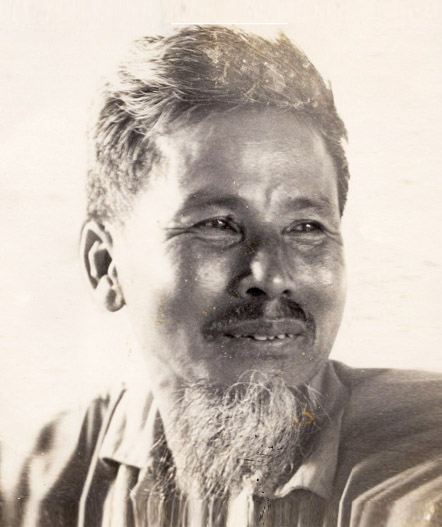

Thu đông năm 1947, đang khi dồn dập các tin quân Pháp nhảy dù chiếm Bắc Kạn, mở nhiều gọng kìm khuýp lấy những khu quan trọng, thì chúng tôi được tin các đồng chí ấy đã về. Bọn tôi bảo nhau sang ngay làng Thễ để gặp và đón.
Trong số những người sốt sắng này có cả bác Ngô. Bác Ngô Tất Tố của chúng tôi vắt vẻo cái tay, khòm khòm cái lưng đi từ nhà dưới lên nhà trên, qua nhà anh Kim Lân và tôi, hất hàm gọi:
– Ông Lân, ông Hồng ạ! Tôi đã bảo mà! Các ông cứ về quách cả Nhã Nam trước có phải gọn không! Ông Tưởng có muốn về Dục Tú làng nhà ông ấy hay về Cói, làng bà ấy cũng tiện! Hai ông mời các ông ấy về ấp ta ngay nhá.
Kim Lân và tôi cười ngất. Chả là đang chuẩn bị chuyển Văn hóa Cứu quốc thành lập Hội Văn nghệ Việt Nam để tập hợp rộng rãi hơn nữa anh chị em văn nghệ sĩ kháng chiến. Do đấy, địa điểm đóng cơ quan đang nhắm mấy nơi, ở Việt Bắc thì chọn Phú Thọ, Vĩnh Yên hay Bắc Giang, Thái Nguyên. Bên Phú Thọ có cơ sở của anh Tô Ngọc Vân, Thế Lữ, Bùi Huy Phồn, Thanh Tịnh, vân vân… Còn ở Bắc Giang thì có các bác Ngô Tất Tố, Hoàng Ngọc Phách, Tú Mỡ, các anh các chị Trần Văn Cẩn, Tạ Thúc Bình, Kim Lân, Anh Thơ, Vân Đài…

Nhà văn Nguyên Hồng (1918-1982)
Làng Thễ cùng cánh đồng với xã chúng tôi. Trên đồi nhà tôi trông thấy rõ cây đa đầu làng Thễ và cả ngôi đình cũ của cụ Đề Thám dựng cho tổng Lân. Anh Kim Lân và tôi vừa đến quán Kĩnh thì thấy ồn ào, re re gồng gánh và xe đạp ở cơ quan phát hành của báo Cứu quốc khu mười hai đi ra. Và mấy người bạn trị sự quen thuộc vừa đi vừa khoe:
– Cả ông Trần Huy Liệu cũng về rồi…
Thế này là thế nào? Tôi tự hỏi, vừa bước gấp nữa. Đúng đồng chí Trần Huy Liệu đã về, và kia kìa, con ngựa của đồng chí buộc ở bụi tre trước cổng. Tôi không còn thật nhớ lông nó màu gì, hình như nhóm lang nhóm nâu, mà chỉ nhận ra nó, vì nó vừa nhỏ, vừa thấp lại gầy. Nhất là bộ yên cương. Cái yên là chiếc bao tải gấp tư đắp qua lưng gần xuống bụng. Còn cương là dây thừng nối thêm một đoạn dây da loăn xoăn như ruột mèo buộc vào bộ hàm thiếc trông như cái rọ. Lạy Chúa sinh ra muôn vật và trời đất! Không hiểu cái con của hiệp sĩ Đông Kisốt và của nhà thơ và nhà chính trị Nguyễn Công Trứ có vào loại con cỡ này của đồng chí Trần Huy Liệu của chúng ta không?…
Nhà các anh Tố Hữu, Nguyễn Huy Tưởng và Nguyễn Đình Thi về lại ở xóm bên cạnh cơ quan phát hành của báo Cứu quốc. Và đây lại là chỗ đóng cũ của tòa soạn báo Xông pha hồi anh Kim Lân còn công tác ở khu bộ khu Mười hai. Thoáng thấy nhau, chúng tôi reo cả lên và bá vai bá cổ nhau rất lâu. Nhìn thấy đủ lệ bộ nào máy chữ, va-li tài liệu có khóa, ba-lô nhớn, ba-lô nhỏ và còn một gánh hình như có cả đèn dầu và gạo nữa, Kim Lân và tôi càng vui mừng. Kim Lân liền giơ tay hất hàm bắt chước diễn lại y như điệu bộ của bác Ngô Tất Tố, bảo Nguyễn Huy Tưởng, nhưng cũng để cả anh Tố Hữu và Nguyễn Đình Thi nghe nữa:
– Thế này thì về quách cả ấp cầu Đen thôi. Cơ quan thường trực đóng ngay nhà bác Ngô hay nhà ông Hồng lại càng tiện…
Mặc dầu lại có thêm tin quân Pháp đã tràn xuống Thái Nguyên và tiến nhiều ngả từ Cầu Đuống lên, chúng tôi vẫn càng chuyện trò rôm rả. Tối tối tụ họp ở nhà bác Ngô Tất tố, Nguyễn Huy Tưởng càng kim cổ kim chỉ sự và từ Đông sang Tây lại từ Tây sang Đông với hết nào Tô Đông Pha, Lý Bạch, Đỗ Phủ lại đến Đăng-tơ, Sếch-spia, Ip-xen, Gót, và đến Nguyễn Trãi, Nguyễn Du, Cao Bá Quát, vân vân…
Nhưng rồi chưa đầy bốn hôm, thì một buổi chiều Kim Lân và tôi nhận được quyết định đi ngay. Nghĩa là cả cơ quan Văn hóa cứu quốc phải chuyển, và chỉ trong hai giờ là cùng, chúng tôi sẽ chia làm hai tốp mà sang… hình như khu Mười để lại trở lên Việt Bắc. Không phải là chuyện, là tin, là nghe nữa! Từ phía Hà Châu, Phú Bình bên Thái Nguyên về, từ phía Chờ, Yên Phong, Từ Sơn, Bắc Ninh (chính quê ông bà Nguyễn Huy Thông ở Từ Sơn đấy) người chạy giặc cứ từng đám từng đám, gồng gánh, dắt trâu bò, bồng bế trẻ con, ông già, bà lão đìu díu nhau, chạy dồn lên mấy làng chung quanh nơi chúng tôi ở. Rồi cả Nhã Nam là thị trấn cửa ngõ của khu chúng tôi ra ngã tư đường giao thông chính đi lên Thái Nguyên, Lạng Sơn, xuống Bắc Giang, Bắc Ninh, sang Phúc Yên, Vĩnh Yên… cũng “a-lô, a-lô” lệnh triệt để tản cư, rậm rịch sầm sập dân quân phá thêm đường và làm vườn không nhà trống.
Cả bộ phận trị sự báo Cứu quốc của Như Phong cũng chuyển gấp; Như Phong cùng mấy phóng viên tòa soạn cũng đi… Nguyễn Đình Thi, Nguyễn Huy Thông với mấy đồng chí nữa lại đóng gánh lên đường. Kim Lân và tôi theo anh Tố Hữu. Hai tôi lỉnh kỉnh gia đình phải đi suốt đêm ngủ đỗ lại một quán bỏ không bên sông Cầu. Gà gáy sáng hôm sau, trời mưa rét, sương mù, chúng tôi đã dậy dặn dò qua việc nhà đoạn đi ngay.
Quân Pháp đang kéo đến cả phố Nhã Nam, và phố Thắng. Hai tôi quay lại đường Ni, ngược lên Sơn Cốt đón anh Tố Hữu và lại gặp cánh Như Phong. Không hiểu đi tiền trạm nghe ngóng hỏi han và liên lạc thế nào mà anh N.M. của ông Như Phong nhà ta, sau cả một buổi sáng đạp xe về, báo tin quân Pháp đang tràn qua Tam Đảo; những toán này toàn lính da đen rạch mặt, ngậm dao ngang miệng, đu chuyền các cây như vượn, đang sục sạo trong các rừng. Chi tiết đã ghê cả người, lại thêm vẻ trợn trừng trợn trạo tái xanh tái xám của “đặc phái viên” N.M… nên chị T.M. đi theo chúng tôi có một khẩu súng (súng nhỏ như con chim chích, đạn không hiểu cỡ gì và tác dụng thế nào mà to chỉ hơn hạt đỗ đen gói bằng mùi xoa lụa) lại giở ra thử đi thử lại rất bí mật, và chị càng được mấy anh hỏi han săn sóc. Sau đấy chỉ mấy hôm thôi, chúng tôi đã đầy đủ tụ nhau ở Thành Cù bên Phú Thọ, ai nấy đều hỏi N.M. đã chạm trán với mấy toán quân Pháp đặc biệt nọ như thế nào, thì lại được một trận cười tức bụng.
…Chúng tôi cứ vượt Tam Đảo. Anh Tố Hữu và chúng tôi qua đèo Nhe mà sang Vĩnh Tường, rồi qua Lâm Thao mà lên Phú Thọ. Chính dọc đường Nhã Nam, Yên Thế, Sơn Cốt, Đèo Nhe và cuối cùng ở Gia Điền, anh Tố Hữu đã làm hai bài thơ Phá đường và Cá nước. Cá nước đăng số 1 tạp chí Văn nghệ, in ở nhà in báo Độc lập trong rừng Thần Sơn dưới chân Tam Đảo. Nghĩa là Cá nước đã gột trứng không phải trong lũ mùa hè của sông Thao, sông Đà mà ở giữa rừng thu đông Việt Bắc, và đã nằm trong ba-lô của Kim Lân và tôi chu du, ngày đi đêm nghỉ ở các quán kháng chiến, từ Phú Thọ xuống cả Vĩnh Yên, Phúc Yên, Bắc Giang, Bắc Ninh, rồi tuôn tràn trên mặt giấy đó, vây chắp bằng chữ ty-pô mà bay đi khắp nơi…
Thế là cơ quan chọn đóng ở Gia Điền. Một mặt chuẩn bị cho Ban vận động mở Đại hội Văn nghệ Việt Nam, một mặt phải lo mau bài vở để ra ngay tạp chí. Bước vào Đại hội đã có tiếng nói của văn nghệ kháng chiến cất lên chào mừng, và báo cáo trước với nhân dân tinh thần tích cực và sự phục vụ của mình rồi.
Những tháng cuối 1947 và đầu 1948 ấy sao mà rét! Không biết có phải khí hậu đặc biệt nơi chúng tôi ở, hay vì ra đi chúng tôi chỉ có mỗi chiếc ba-lô mà các thứ quần áo hay thứ đồ vật gì tốt nhất đều để lại cho nhà hết! Thường thường những khi trời giá lạnh đêm càng dài và càng khó ngủ. Vì thế chúng tôi càng thích viết khuya. Dạo ấy dầu tây đang khan vừa phần địa phương sẵn dầu trẩu dầu sỏ, nên cứ thắp từng đĩa to, bắc từng túm. Một bếp lửa chất ba bốn gốc cây cứ cháy rực. Trước còn kiểu cách, vẫn chỉ mặc bờ-lu-dông và mặc thêm sơ-mi và quấn khăn ngồi viết. Sau ai nấy đều khoác chăn: riêng anh Kim Lân còn quấn cả quần nâu ta xù xù ở cổ và lột cái vỏ chăn nâu trùm thêm đầu.
Đứng ngoài cửa nhìn vào nhà, chung quanh đống lửa và ở mấy cái bàn ngùn ngụt khói đèn dầu đĩa, những gương mặt tê lạnh cũng có, đăm đăm cũng có, hằm hằm cũng có nhăn nhó và chảy bệu ra cũng có, thật là khó quên được. Và cũng khó mà yên tâm chui vào chăn sớm, nhất là bài viết chưa xong và thấy mình, nếu chịu cho cái bị nó làm nhoài thêm người một chút nữa… thì sẽ trở thành thằng khốn nạn mất.
Vì thế, nhiều lúc Kim Lân ta đã rũ rũ chăn, lồng thêm màn chui vào nằm cu ru tưởng sắp ngáy rồi, bỗng lại nhỏm dậy, khoác lòa xòa tất cả những thứ chăn màn trên người mà ra chỗ viết. Chúng tôi ngồi viết bằng ghế con, bằng gốc cây, bằng cả chổi lúa; còn hắn thì kê ván, chồng sách báo lên ba-lô hay mặt hòm sách. Những đêm khuya này, thường lùi sắn ăn với nhau, và hút thuốc lào cứ rong róc. Người bám ruộng và cầy khỏe nhất vẫn là Nguyễn Huy Tưởng. Kịch Những người ở lại, cứ từng màn Nguyễn Huy Tưởng lại đọc cho anh em nghe để góp ý. Thứ đến Nguyễn Đình Thi. Không chỉ viết nghị luận, Nguyễn Đình Thi còn làm thơ:
…Những dòng sông đỏ nặng phù sa
Nước chúng ta, nước của những người
chưa bao giờ khuất
Đêm đêm rì rầm trong tiếng đất
Những buổi ngày xưa vọng nói về…
Bài Nhận đường của anh bản thảo thứ nhất đến khi đưa in cũng đọc cho anh em nghe và sửa chữa; vòng móc cứ như dây tơ hồng trên những trang chữ rất nhỏ chi chít. Như Phong làm báo Cứu quốc khu Mười hai cũng đến đây viết ké. Một bên Nguyễn Huy Tưởng, một bên Như Phong, giữa là đống lửa và cây đèn đĩa cháy nghi ngút, trông cứ như hai hộ pháp. Hai hộ pháp ngồi không phải là nhập thiền hay canh giữ đền chùa nào, mà là đang bị cái giống sáng tác yêu tinh thần nữ ốp đồng nó hành vậy!
Chúng tôi viết như thế và cứ viết, mặc dầu từ tiền ra tạp chí đến việc chạy được nhà in vẫn còn ở những đâu đâu ấy!
Nguyễn Huy Tưởng làm nội vụ, vừa là thủ quỹ vừa đi giao tiếp in tạp chí. Khi thì ông đi biệt hàng nửa tháng với một đồng chí vừa làm giao thông vừa là cấp dưỡng cho cơ quan, Nguyễn Huy Tưởng làm chúng tôi hú hồn hú vía nhắn hết anh này đến anh em khác hỏi xem tin tức công việc lành dữ thế nào, thì một anh cho biết ông không ốm đau hay đánh mất tiền quỹ hay bị tai nạn gì cả…, mà đang đứng ở một cơ quan nằm chờ và đang viết!…
– Thằng này mà ngồi viết thì mọc rễ ở đấy mất! Phải rênh nó về mà tìm chỗ in khác thôi!
Hầu hết chúng tôi đều xung thiên chi nộ, vì chỉ muốn lôi ngay Nguyễn Huy Tưởng về đả cho một trận. Các bài đã xong: Đọc đi đọc lại bản thảo, ai nấy đều thấy “được rồi”, cả đến Như Phong ì ạch như thế mà cũng được hai mẩu bút ký ngắn sau hàng chục năm tưởng như tắc mất buồng trứng. Mấy mục chính như thể truyện nghị luận không những rôm rả mà cả mục phụ như Những nẻo đường đất nước cũng vững. Bìa thì đúng là đã nộp hàng trăm ý kiến của tòa soạn và mấy chục bản vẽ của hết Văn Cao, Trần Văn Cẩn lại còn không biết bao nhiêu họa sĩ, nhạc sĩ, kịch sĩ khác xúm lại bàn bạc thêm. Ma-két ruột cũng xong. Các kiểu chữ tít và chữ thường của các sách báo tiếng tăm của nhà in lành nghề đẹp nhất thời ấy đều được khảo đi khảo lại để sắp cho từng bài một. Tất cả hơn trăm trang! Chao ôi! Trong kháng chiến mà số đầu của một tạp chí văn học ra mắt những hơn trăm trang, thì đúng là ra quân như Nguyễn Huệ vậy! Bao giờ cũng như bao giờ, càng tối khuya và giá lạnh mà họp về việc in và kiểm điểm về nội dung bài vở cũng như về hình thức trình bày, chỗ chúng tôi lại ầm ầm lên quá như mổ bò, làm cả ông chủ bà chủ nhà thấy vui thấy quý, chứ không thấy bận, thấy lạ gì cả. Càng như thế, chúng tôi càng điên người vì sự biệt tăm của Nguyễn Huy Tưởng. Đặc biệt là ông lại giữ và chi các tiền tiêu pha chung, và đồng chí giao thông kiêm cấp dưỡng độc nhất của cơ quan vẫn cứ theo ông!
Trong khi ấy cả anh Tố Hữu và Nguyễn Đình Thi cùng bổ đi tìm đi chạy nhà in. Anh Kim Lân và tôi ru rú ở nhà càng mong… mong như câu cửa miệng của nhân dân: Mong hơn cả mẹ về chợ ấy. Rồi Nguyễn Huy Tưởng về. Cùng với ông là một gánh nặng sách báo tài liệu gởi lại ở một nhà đồng bào bên Vĩnh Yên những tưởng không bị đốt thì cũng bị mối xông mất, trong lúc ông suýt chạm trán với đám quân Pháp tan tác ở sông Lô kéo nhau về xuôi! Anh em reo lên vì thấy Nguyễn Huy Tưởng không bị sì bu-du mà lại tươi tỉnh và lại chuyện các thứ chuyện. Hỏi ra thì Nguyễn Huy Tưởng đã xong màn chót Những người ở lại trong hai tuần “moong” của anh em và làm anh em phát sốt cả ruột gan, mòn cả con mắt. Và nhà in đã có. Tạp chí Văn nghệ đã có nhà in rồi! Không phải chỉ nhận in một số mà thề ra tới số năm số sáu, cốt nhất là phải có giấy!…
Anh em hét lên, túm lấy ông “Tôn-xtôi” nhà ta mà vò đầu, mà bẹo má, mà lắc vai, mà thụi vào mạng mỡ mà… châm luôn thuốc lá tiếp cho tận miệng: – thứ thuốc lá lẻ ngoại ngon nhất, sang nhất mua lẻ ở quán Hồ Gươm, hay Áo Tím vân vân gì đây ở “Thành phố Thanh Cù” ngày ấy.
– Đề nghị bữa chiều nay làm một con gà… rồi ngày mai ngày kia ăn cơm canh sắn thôi cũng được!
– Phải, cứ phải tìm ngay một con gà. Tiền này bắt thằng Tưởng phải trả! Nó phải khao kịch của nó! Không thế thì là thằng khốn lạn!… Và mình không bắt nó khao, không ăn gà của nó thì cũng là những thằng khốn lạn!
Nguyễn Huy Tưởng lại quằn người đỡ bên phải, né bên trái vì anh em vò đầu, bẹo má, đấm thụi túi bụi.
… Đã gần Tết. Càng lạnh giá. Trong làng, người đi lấy lá dong và đem chè, đem cau, đem cam đi bán các chợ, các bến cứ lũ lượt. Gà vịt, trầu vỏ, bòng bưởi đầy các lối vào chợ, vào phố. Đồng bào các dân tộc mặc toàn quần áo mới mua sắm kín các hàng quán, và các hàng quán tản cư gánh nhau dọn bán không thiếu một thứ gì của Hà Nội, của dưới xuôi và đã treo các thứ tranh ảnh tết ra cả ngoài cửa, lại còn bầy la liệt đủ cả chậu lan, chậu quất, chậu cúc, chậu thược dược, các lọ các bình hoa đào, la-dơn và cả thủy tiên nữa. Nhiều áo bông dài đã sửa thành áo cộc chẽn. Những sa tanh, cẩm châu, cỏ rếp với các màu óng ả rực rỡ hay nền nã, với các kiểu khăn vấn, khăn choàng, càng làm những người qua đường quen thuộc thấy như vẫn ở một quãng phố Đồng Xuân, chợ Hôm, chợ Cửa Nam nào đó. Bất chấp cả máy bay, hàng phố đã kéo cờ và bày bàn thờ Tổ quốc đủ lệ bộ đỉnh lư, chân nến, bình hương bằng đồng, đánh bóng còn hơn cả mọi năm. Cán bộ cơ quan và bộ đội đi lại rầm rập, cũng đông hơn mọi ngày.
Bản thảo các loại đã đánh máy xong, ghi chú đầy đủ rõ ràng các kiểu chữ tít và vi-nhét. Kim Lân và tôi đưa đi nhà in. Cầm giấy giới thiệu và tiền công tác phí chúng tôi bàn nhau bảo Nguyễn Đình Thi và Nguyễn Huy Tưởng:
– Hai ông này, chúng tôi đề nghị hai ông hỏi mượn cho chúng tôi khẩu súng của bà T.M. nếu không hai ông xuất tiền mua cho một mô-de, côn-bát…
Cả Nguyễn Đình Thi và Nguyễn Huy Tưởng đều tròn mắt. Chúng tôi càng trịnh trọng:
– Đem tập bản thảo này và khoác ba-lô lên đường trường mà không có súng tự vệ, nhỡ bị cướp hay ám sát thì sao?
Nhất là gặp phải những toán quân Pháp đặc biệt dao găm rạch mặt, dao găm ngậm miệng, đu chuyền các cây rừng như vượn vẫn còn sục sạo và đón các ngả đường?
Nguyễn Huy Tưởng đỏ xửng mặt.
– Và phải cho chúng tôi một liên lạc đi theo chứ?
-??
– Để nhỡ có một thằng bị cảm hay ốm nặng, thì có người về cơ quan báo tin, hoặc ở lại trông nom cho thằng khỏe cứ việc đi nhà in…
Tất cả cười ngất. Xốc ba-lô lên lưng, chúng tôi còn bắt tay nhau. Nguyễn Huy Tưởng và Nguyễn Đình Thi còn dặn thêm:
– Ông Hồng vốn có tiếng cẩn thận giữ bản thảo thì ông chịu trách nhiệm về bản thảo. Còn ông Lân người ý tứ tinh việc thì chịu trách nhiệm về giao thiệp với nhà in! Thôi hai ông về trước mà chuẩn bị tết và đón anh em nhé!
– Thế bao giờ ông Thi về nào? (Gia đình Nguyễn Đình Thi dạo ấy ở chung với tôi).
– Tôi và ông Tưởng họp xong đến 28, 29 tết thì về. Hai ông nhớ đón anh em ăn cái tết thứ hai, chiến thắng Việt Bắc thật to đấy nhé.
– Tờ-rai! Tờ-rai! (tin tưởng, tin tưởng) thôi kính chúc các ông ở lại mà họp, chúng tôi xin phép lên đường ngay thôi ạ ạ ạ ạ!
Kim Lân và tôi lộc xộc ba lô, ra đường cười vang với nhau, chưa bao giờ được sung sướng thế!
Kim Lân tụt cả dép chới với gọi tôi:
– Ông Hồng ơi! Chờ nhau với nào! Ông quay lại mà xem ông Tôn-xtôi nhà ta đang vẫy chào yêng em kia kìa!…
Hai tôi xuôi bờ sông Lô, qua sông Lô lên bến Then rồi sang Thản Sơn huyện Lập Thạch. Tất cả những độ đường này đều còn rành rành dấu vết mới. Đất Phú Thọ, Tuyên Quang là đất cọ đất gồi. Những mái lá vàng cốm ẩn hiện ở những rặng cây giữa những nương, chè, ở những bìa rừng và bên những sườn đồi đất đỏ.
Hai tôi lại các thứ chuyện. Cố nhiên lại chuyện về tạp chí. Nhà in báo Độc lập đã nhận in đến số 5, số 6, nhưng căn bản là phải có giấy. Giấy trong thành và ngoài vùng đều rất thất thường và đắt. Như thế thì còn trông vào giấy ở Ấm Thượng. Nhưng rồi đây các sách báo sẽ phát triển, kể cả tạp chí Văn nghệ nữa, vậy mình phải chủ động. Nghĩa là vừa có nhà in riêng và xưởng giấy riêng. Hai tôi liền tính ngay đến việc liên lạc với Tô Hoài, nhờ Tô Hoài giới thiệu hay tập họp cho mấy bà con thân thuộc ở làng Bưởi. Hội Văn nghệ sẽ vay tiền cấp vốn cho bà con làm.
– Như thế, cả mấy gia đình văn nghệ sĩ các bu Hà, bu Hiền, bác Tố gái, các bà Tạ Thúc Bình, bà chị ông Trần Văn Cẩn và các con cháu anh em có thể vào xưởng tập rồi làm thợ giấy được hết!… Kim Lân lại ngoắt cái tay lên, đi vắt va vắt vẻo bắt chước bác Ngô:
– Chi bằng các ông ấy cứ đưa quách Hội và tạp chí về Nhã Nam cho tiện!
Hình như vào những ngày 20 hay 21 tháng chạp, ông Công sắp lên chầu giời thì phải. Trời bỗng nắng to nhưng vẫn lạnh buốt. Gió thổi càng mạnh, cái thứ gió của núi rừng được buổi khô ráo, quang đãng. Đường vào nhà in hầu hết đường mòn. Nhiều quãng, lá rừng lút cả chân chúng tôi! Không hiểu lá rừng rụng từ bao giờ mà chúng tôi thấy như đi trên thảm, và là một mặt thảm không có chiều dài thì hun hút. Dưới chân chúng tôi lá vàng, trên đầu chúng tôi lá vàng, trước mắt chúng tôi lá vàng. Lá vàng và nắng. Thỉnh thoảng một mảng trời lấp lóa. Các thứ chim hót. Những làn hương rất lạ, không phải chỉ riêng của phong lan. Hai tôi mỗi người một cây hèo, đi hết mấy chặng vất vả, vắng và dốc mà chỉ thấy hơi mỏi và khát…
Tạp chí Văn Nghệ số đầu tiên, in hơn một nghìn bản. Bìa giấy trắng đẹp còn hơn những bìa tạp chí Tiền Phong in ở Hà Nội trước đây. Phát hành chưa đầy một tháng, đã nhận thư và công văn nhiều nơi hỏi thêm. Khu Ba và Khu Bốn càng phía trong càng thiếu. Phải tái bản. Đi trên các ngả đường sâu lên Việt Bắc, lại trông thấy trang bìa trắng dày dặn cứng cáp với hình cánh cửa mở, lồng lộng ngôi sao và hai chữ V.N. như hai cánh chim ở chung những quán sách, những trạm giao thông, những phòng thông tin xa xôi… mà thấy cảnh vật vui thêm, chuyện trò dọc đường càng tươi hơn…
Tháng 5.1973
NGUYÊN HỒNG
(Trích trong “Những nhân vật ấy đã sống với tôi”, Nxb Tác phẩm mới, 1978)